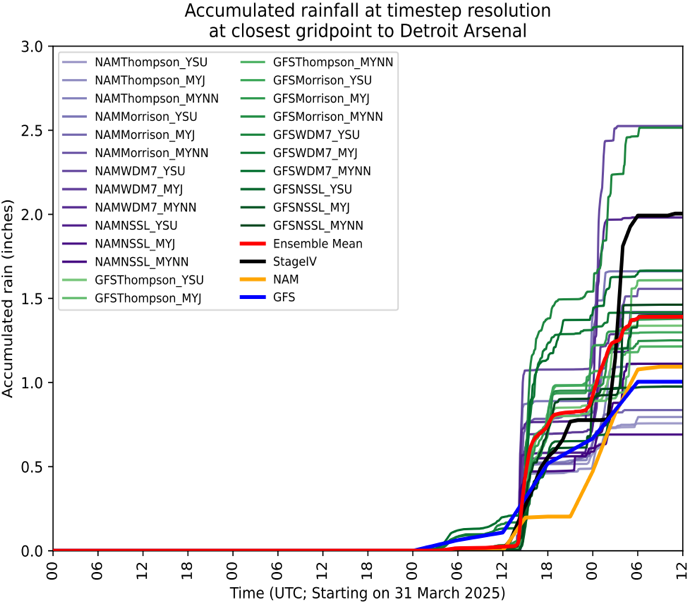

Atmospheric Science
This team studies flood-producing storms and develops precipitation ensembles for local flood models.
Led by Francina Dominguez
Understanding flood-producing storms
The Atmospheric Science team analyzes the fronts, cyclones, and organized convective storms associated with extreme precipitation in southeast Michigan. Its historical event classification helps connect storm structure and duration to the rainfall that reaches a watershed.
A 24-member Weather Research and Forecasting (WRF) ensemble at 3 km resolution represents alternative model configurations and initial or boundary conditions. Evaluations against historical events examine the range of plausible precipitation outcomes and provide rainfall inputs for the Flood Science team.

Connections Across the Project
Rainfall ensembles feed the flood models. Work with uncertainty, psychology, and decision-support researchers helps determine which forecast information is useful, when it is needed, and how to present it.